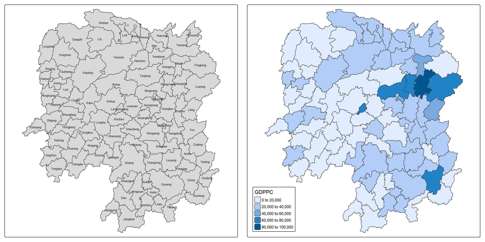
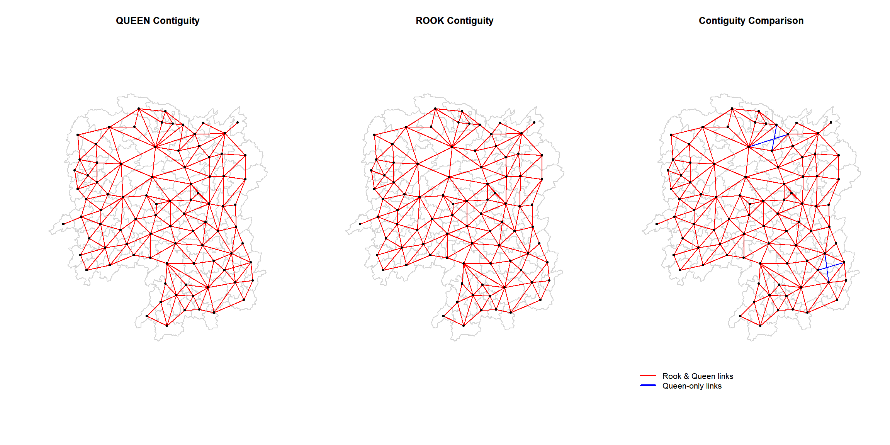
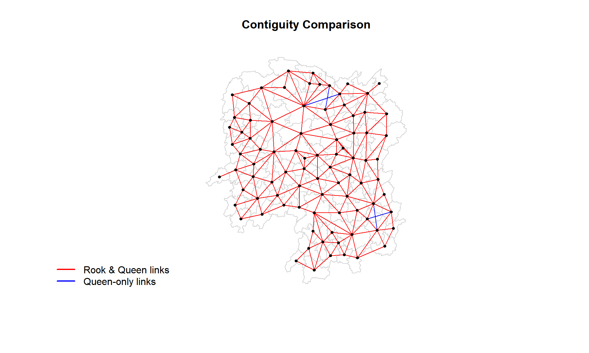

pacman:: p_load(sf, spdep, knitr, tmap, tidyverse)04: Spatial Weights and Applications
1 Overview
In this exercise, we apply spatial weights in a practical implementation in R.
Spatial data are rarely independent which often violates the independence assumptions of classical statistics (e.g., regression or ANOVA).Properly defining and weighting neighbours is crucial to account for spatial autocorrelation and avoid biased outcomes. Through it, we can understand who influences whom and how strong the influence is.
2 The Study Area and Data
The following two data sets are used here:
Geospatial data: Hunan county boundary layer in
shapefileformatAspatial data:
Hunan_2012.csvfor Hunan’s local development indicators in 2012.
2.1 Getting started
A total of five R packages will be used in this exercise.
| Package | Description |
|---|---|
| sf | Simple Features, a new R package which handles importing, managing, and processing vector-based geospatial data. |
| spdep | Tools for computing spatial weights and calculating spatially lagged variables. |
| knitr | Provides useful functions for dynamic document generation. |
| tmap | Creates cartographic quality static or interactive choropleth maps. |
| tidyverse | A collection of R packages for data import, cleaning, transformation, and visualisation (e.g., readr, dplyr, tidyr, ggplot2). |
After installation via install.packages(), we load them into R environment using the code below.
3 Importing Data into R
In this section, we import above-mentioned two data sets into the R environment by using st_read() from sf package for geospatial data and read_csv() from readr of tiyeverse family.
3.2 Importing csv File
The code chunk uses read_csv() of readr to import the attribute table of local development indicators in 2012.
hunan2012 <- read_csv("data/aspatial/Hunan_2012.csv")
glimpse(hunan2012)Rows: 88
Columns: 29
$ County <chr> "Anhua", "Anren", "Anxiang", "Baojing", "Chaling", "Changn…
$ City <chr> "Yiyang", "Chenzhou", "Changde", "Hunan West", "Zhuzhou", …
$ avg_wage <dbl> 30544, 28058, 31935, 30843, 31251, 28518, 54540, 28597, 33…
$ deposite <dbl> 10967.0, 4598.9, 5517.2, 2250.0, 8241.4, 10860.0, 24332.0,…
$ FAI <dbl> 6831.7, 6386.1, 3541.0, 1005.4, 6508.4, 7920.0, 33624.0, 1…
$ Gov_Rev <dbl> 456.72, 220.57, 243.64, 192.59, 620.19, 769.86, 5350.00, 1…
$ Gov_Exp <dbl> 2703.0, 1454.7, 1779.5, 1379.1, 1947.0, 2631.6, 7885.5, 11…
$ GDP <dbl> 13225.0, 4941.2, 12482.0, 4087.9, 11585.0, 19886.0, 88009.…
$ GDPPC <dbl> 14567, 12761, 23667, 14563, 20078, 24418, 88656, 10132, 17…
$ GIO <dbl> 9276.90, 4189.20, 5108.90, 3623.50, 9157.70, 37392.00, 513…
$ Loan <dbl> 3954.90, 2555.30, 2806.90, 1253.70, 4287.40, 4242.80, 4053…
$ NIPCR <dbl> 3528.3, 3271.8, 7693.7, 4191.3, 3887.7, 9528.0, 17070.0, 3…
$ Bed <dbl> 2718, 970, 1931, 927, 1449, 3605, 3310, 582, 2170, 2179, 1…
$ Emp <dbl> 494.310, 290.820, 336.390, 195.170, 330.290, 548.610, 670.…
$ EmpR <dbl> 441.4, 255.4, 270.5, 145.6, 299.0, 415.1, 452.0, 127.6, 21…
$ EmpRT <dbl> 338.0, 99.4, 205.9, 116.4, 154.0, 273.7, 219.4, 94.4, 174.…
$ Pri_Stu <dbl> 54.175, 33.171, 19.584, 19.249, 33.906, 81.831, 59.151, 18…
$ Sec_Stu <dbl> 32.830, 17.505, 17.819, 11.831, 20.548, 44.485, 39.685, 7.…
$ Household <dbl> 290.4, 104.6, 148.1, 73.2, 148.7, 211.2, 300.3, 76.1, 139.…
$ Household_R <dbl> 234.5, 121.9, 135.4, 69.9, 139.4, 211.7, 248.4, 59.6, 110.…
$ NOIP <dbl> 101, 34, 53, 18, 106, 115, 214, 17, 55, 70, 44, 84, 74, 17…
$ Pop_R <dbl> 670.3, 243.2, 346.0, 184.1, 301.6, 448.2, 475.1, 189.6, 31…
$ RSCG <dbl> 5760.60, 2386.40, 3957.90, 768.04, 4009.50, 5220.40, 22604…
$ Pop_T <dbl> 910.8, 388.7, 528.3, 281.3, 578.4, 816.3, 998.6, 256.7, 45…
$ Agri <dbl> 4942.253, 2357.764, 4524.410, 1118.561, 3793.550, 6430.782…
$ Service <dbl> 5414.5, 3814.1, 14100.0, 541.8, 5444.0, 13074.6, 17726.6, …
$ Disp_Inc <dbl> 12373, 16072, 16610, 13455, 20461, 20868, 183252, 12379, 1…
$ RORP <dbl> 0.7359464, 0.6256753, 0.6549309, 0.6544614, 0.5214385, 0.5…
$ ROREmp <dbl> 0.8929619, 0.8782065, 0.8041262, 0.7460163, 0.9052651, 0.7…class(hunan2012)[1] "spec_tbl_df" "tbl_df" "tbl" "data.frame" 3.3 Performing Relational Join
The code chunk uses left_join() of dplyr package from tidyverse to append the attribute table of hunan the spatial polygon data frame with the attribute fields of hunan2012 data frame by = join_by(County) and selects required fields.
colnames(hunan)[1] "NAME_2" "ID_3" "NAME_3" "ENGTYPE_3" "Shape_Leng"
[6] "Shape_Area" "County" "geometry" colnames(hunan2012) [1] "County" "City" "avg_wage" "deposite" "FAI"
[6] "Gov_Rev" "Gov_Exp" "GDP" "GDPPC" "GIO"
[11] "Loan" "NIPCR" "Bed" "Emp" "EmpR"
[16] "EmpRT" "Pri_Stu" "Sec_Stu" "Household" "Household_R"
[21] "NOIP" "Pop_R" "RSCG" "Pop_T" "Agri"
[26] "Service" "Disp_Inc" "RORP" "ROREmp" hunan_jn <- left_join(hunan, hunan2012)
colnames(hunan_jn) [1] "NAME_2" "ID_3" "NAME_3" "ENGTYPE_3" "Shape_Leng"
[6] "Shape_Area" "County" "City" "avg_wage" "deposite"
[11] "FAI" "Gov_Rev" "Gov_Exp" "GDP" "GDPPC"
[16] "GIO" "Loan" "NIPCR" "Bed" "Emp"
[21] "EmpR" "EmpRT" "Pri_Stu" "Sec_Stu" "Household"
[26] "Household_R" "NOIP" "Pop_R" "RSCG" "Pop_T"
[31] "Agri" "Service" "Disp_Inc" "RORP" "ROREmp"
[36] "geometry" hunan<- hunan_jn %>%
select(1:4, 7, 15)
glimpse(hunan)Rows: 88
Columns: 7
$ NAME_2 <chr> "Changde", "Changde", "Changde", "Changde", "Changde", "Chan…
$ ID_3 <int> 21098, 21100, 21101, 21102, 21103, 21104, 21109, 21110, 2111…
$ NAME_3 <chr> "Anxiang", "Hanshou", "Jinshi", "Li", "Linli", "Shimen", "Li…
$ ENGTYPE_3 <chr> "County", "County", "County City", "County", "County", "Coun…
$ County <chr> "Anxiang", "Hanshou", "Jinshi", "Li", "Linli", "Shimen", "Li…
$ GDPPC <dbl> 23667, 20981, 34592, 24473, 25554, 27137, 63118, 62202, 7066…
$ geometry <POLYGON [°]> POLYGON ((112.0625 29.75523..., POLYGON ((112.2288 2…hunanSimple feature collection with 88 features and 6 fields
Geometry type: POLYGON
Dimension: XY
Bounding box: xmin: 108.7831 ymin: 24.6342 xmax: 114.2544 ymax: 30.12812
Geodetic CRS: WGS 84
First 10 features:
NAME_2 ID_3 NAME_3 ENGTYPE_3 County GDPPC
1 Changde 21098 Anxiang County Anxiang 23667
2 Changde 21100 Hanshou County Hanshou 20981
3 Changde 21101 Jinshi County City Jinshi 34592
4 Changde 21102 Li County Li 24473
5 Changde 21103 Linli County Linli 25554
6 Changde 21104 Shimen County Shimen 27137
7 Changsha 21109 Liuyang County City Liuyang 63118
8 Changsha 21110 Ningxiang County Ningxiang 62202
9 Changsha 21111 Wangcheng County Wangcheng 70666
10 Chenzhou 21112 Anren County Anren 12761
geometry
1 POLYGON ((112.0625 29.75523...
2 POLYGON ((112.2288 29.11684...
3 POLYGON ((111.8927 29.6013,...
4 POLYGON ((111.3731 29.94649...
5 POLYGON ((111.6324 29.76288...
6 POLYGON ((110.8825 30.11675...
7 POLYGON ((113.9905 28.5682,...
8 POLYGON ((112.7181 28.38299...
9 POLYGON ((112.7914 28.52688...
10 POLYGON ((113.1757 26.82734...4 Visualising Reginal Development Indicator
Next we use tm_polygons() to create a base map and use qtm() also from tmap to create a choropleth map to show the distribution of GDP per capita GDPPC 2012.
basemap <- tm_shape(hunan) +
tm_polygons() +
tm_text("NAME_3", size = 0.5)
gdppc <- qtm(hunan, "GDPPC") +
tm_layout(
legend.position = c("left", "bottom"))
tmap_arrange(basemap, gdppc, asp = 1, ncol =2)
Note
Quick summary:
The side-by-side maps show that the distribution of GDP per capita (GDPPC) across Hunan Province is not evenly spread. The majority of counties record values below 60K. The darkest-shaded area is Changsha, which has the highest GDPPC, ranging from 80K to 100K, with income gradually decreasing as one moves outward from the capital circle. Outside of this core, two other counties stand out with GDPPC between 60K and 80K: Lengshuikeng, located in central Hunan, and Zixing in the southeast.
5 Computing Contiguity Spatial Weights
Neighbours could be defined by using: Contiguity (shared border).
(Insee & Eurostat, 2018) Contiguity-defined neighbourhoods are widely used in demographic and social studies. Several types of contiguity can be distinguished. In Rook contiguity, two neighbourhoods are considered adjacent if they share at least two common boundary points (i.e., a full edge). On the other hand, Queen contiguity requires only one common boundary point (e.g., an edge or a vertex). As a result, the number of neighbours defined under Queen contiguity is always greater than or equal to those defined under Rook contiguity.
Next, we use poly2nb() of spdep package to calculate contiguity weights metrics for the study area hunan.The function allows us to specify the type of contiguity by setting the queen argument to either TRUE (Queen contiguity) or FALSE (Rook contiguity).
The code chunk below returns QUEEN contiguity weight matrix.
From the summary statistics, we learn that the dataset contains 88 counties, with a total of 448 neighbour connections across all regions. Among these, percentage of actual neighbour links relative to all possible links is 5.79%. On average, each county has about five neighbours.
Looking at the link number distribution, we see that region ID 85 is the most connected, with 11 neighbours, while region ID 30 and 65 are the least connected, each having only one neighbour. Most counties have between four and six neighbours, which is consistent with the average of five links per region.
wm_q <- poly2nb(hunan, queen = TRUE)
summary(wm_q)Neighbour list object:
Number of regions: 88
Number of nonzero links: 448
Percentage nonzero weights: 5.785124
Average number of links: 5.090909
Link number distribution:
1 2 3 4 5 6 7 8 9 11
2 2 12 16 24 14 11 4 2 1
2 least connected regions:
30 65 with 1 link
1 most connected region:
85 with 11 linksBy using the index code chunk below, we can print the list of neighbour ploygons for most-connected region 85.The numbers represent the polygon IDs as stored in hunan SpatialPolygonsDataFrame class.
Further, we can retrieve the county name of region 85 by looking it up in the hunan dataset, specifically using the syntax dataset$column[i], which returns the corresponding value in that column.
We can also retrieve 11 neighbouring county names by using thec() function to concatenate the required region IDs inside the indexing operation.
wm_q[[85]] [1] 1 2 3 5 6 32 56 57 69 75 78class(wm_q[[85]])[1] "integer"hunan$County[85][1] "Taoyuan"hunan$NAME_3[c(1, 2, 3, 5, 6, 32, 56, 57, 69, 75, 78)] [1] "Anxiang" "Hanshou" "Jinshi" "Linli" "Shimen" "Yuanling"
[7] "Anhua" "Nan" "Cili" "Sangzhi" "Taojiang"We can also wrap both steps together once we get familiar with the data frames.
hunan$NAME_3[wm_q[[85]]] [1] "Anxiang" "Hanshou" "Jinshi" "Linli" "Shimen" "Yuanling"
[7] "Anhua" "Nan" "Cili" "Sangzhi" "Taojiang"To simplify the code and reduce the risk of syntax errors, we can first assign the neighbour indices of a given region to a helper variable then retieve the corresponding GDPPC values.
nb1 <- wm_q[[1]]
hunan$GDPPC[nb1][1] 20981 34592 24473 21311 22879Additionally, we can also use the structure function str() to display the complete matrix.
str(wm_q)List of 88
$ : int [1:5] 2 3 4 57 85
$ : int [1:5] 1 57 58 78 85
$ : int [1:4] 1 4 5 85
$ : int [1:4] 1 3 5 6
$ : int [1:4] 3 4 6 85
$ : int [1:5] 4 5 69 75 85
$ : int [1:4] 67 71 74 84
$ : int [1:7] 9 46 47 56 78 80 86
$ : int [1:6] 8 66 68 78 84 86
$ : int [1:8] 16 17 19 20 22 70 72 73
$ : int [1:3] 14 17 72
$ : int [1:5] 13 60 61 63 83
$ : int [1:4] 12 15 60 83
$ : int [1:3] 11 15 17
$ : int [1:4] 13 14 17 83
$ : int [1:5] 10 17 22 72 83
$ : int [1:7] 10 11 14 15 16 72 83
$ : int [1:5] 20 22 23 77 83
$ : int [1:6] 10 20 21 73 74 86
$ : int [1:7] 10 18 19 21 22 23 82
$ : int [1:5] 19 20 35 82 86
$ : int [1:5] 10 16 18 20 83
$ : int [1:7] 18 20 38 41 77 79 82
$ : int [1:5] 25 28 31 32 54
$ : int [1:5] 24 28 31 33 81
$ : int [1:4] 27 33 42 81
$ : int [1:3] 26 29 42
$ : int [1:5] 24 25 33 49 54
$ : int [1:3] 27 37 42
$ : int 33
$ : int [1:8] 24 25 32 36 39 40 56 81
$ : int [1:8] 24 31 50 54 55 56 75 85
$ : int [1:5] 25 26 28 30 81
$ : int [1:3] 36 45 80
$ : int [1:6] 21 41 47 80 82 86
$ : int [1:6] 31 34 40 45 56 80
$ : int [1:4] 29 42 43 44
$ : int [1:4] 23 44 77 79
$ : int [1:5] 31 40 42 43 81
$ : int [1:6] 31 36 39 43 45 79
$ : int [1:6] 23 35 45 79 80 82
$ : int [1:7] 26 27 29 37 39 43 81
$ : int [1:6] 37 39 40 42 44 79
$ : int [1:4] 37 38 43 79
$ : int [1:6] 34 36 40 41 79 80
$ : int [1:3] 8 47 86
$ : int [1:5] 8 35 46 80 86
$ : int [1:5] 50 51 52 53 55
$ : int [1:4] 28 51 52 54
$ : int [1:5] 32 48 52 54 55
$ : int [1:3] 48 49 52
$ : int [1:5] 48 49 50 51 54
$ : int [1:3] 48 55 75
$ : int [1:6] 24 28 32 49 50 52
$ : int [1:5] 32 48 50 53 75
$ : int [1:7] 8 31 32 36 78 80 85
$ : int [1:6] 1 2 58 64 76 85
$ : int [1:5] 2 57 68 76 78
$ : int [1:4] 60 61 87 88
$ : int [1:4] 12 13 59 61
$ : int [1:7] 12 59 60 62 63 77 87
$ : int [1:3] 61 77 87
$ : int [1:4] 12 61 77 83
$ : int [1:2] 57 76
$ : int 76
$ : int [1:5] 9 67 68 76 84
$ : int [1:4] 7 66 76 84
$ : int [1:5] 9 58 66 76 78
$ : int [1:3] 6 75 85
$ : int [1:3] 10 72 73
$ : int [1:3] 7 73 74
$ : int [1:5] 10 11 16 17 70
$ : int [1:5] 10 19 70 71 74
$ : int [1:6] 7 19 71 73 84 86
$ : int [1:6] 6 32 53 55 69 85
$ : int [1:7] 57 58 64 65 66 67 68
$ : int [1:7] 18 23 38 61 62 63 83
$ : int [1:7] 2 8 9 56 58 68 85
$ : int [1:7] 23 38 40 41 43 44 45
$ : int [1:8] 8 34 35 36 41 45 47 56
$ : int [1:6] 25 26 31 33 39 42
$ : int [1:5] 20 21 23 35 41
$ : int [1:9] 12 13 15 16 17 18 22 63 77
$ : int [1:6] 7 9 66 67 74 86
$ : int [1:11] 1 2 3 5 6 32 56 57 69 75 ...
$ : int [1:9] 8 9 19 21 35 46 47 74 84
$ : int [1:4] 59 61 62 88
$ : int [1:2] 59 87
- attr(*, "class")= chr "nb"
- attr(*, "region.id")= chr [1:88] "1" "2" "3" "4" ...
- attr(*, "call")= language poly2nb(pl = hunan, queen = TRUE)
- attr(*, "type")= chr "queen"
- attr(*, "snap")= num 9e-08
- attr(*, "sym")= logi TRUE
- attr(*, "ncomp")=List of 2
..$ nc : int 1
..$ comp.id: int [1:88] 1 1 1 1 1 1 1 1 1 1 ...As mentioned earlier, the measurement type can be easily switched to Rook mode by disabling the queen argument. The code chunk below uses poly2nb() to compute the Rook contiguity weight matrix.
wm_r <- poly2nb(hunan, queen = FALSE)
summary(wm_r)Neighbour list object:
Number of regions: 88
Number of nonzero links: 440
Percentage nonzero weights: 5.681818
Average number of links: 5
Link number distribution:
1 2 3 4 5 6 7 8 9 10
2 2 12 20 21 14 11 3 2 1
2 least connected regions:
30 65 with 1 link
1 most connected region:
85 with 10 linksThe summary shows that there are 88 regions in the dataset, with a total of 440 possible neighbour connections. Among these, percentage of actual neighbour links relative to all possible links is 5.68%. On average, each region has around five neighbours. Similarly, one region is the most connected, with 10 Rook neighbours, while regions 30 and 65 are the least connected, each having only one link.
The code chunk below retreives the region ID 85’s neighbour names and GDPPC under ROOK.
We used the setdiff(a, b) function to identify the neighbours included under Queen contiguity but not under Rook. The result returned region ID 57, named Nan. It is unclear whether this indicates a missing value. However, the county is located at the northeast vertex of region 85 (Taoyuan) according to the baseline map.
wm_r[[85]] [1] 1 2 3 5 6 32 56 69 75 78hunan$County[85][1] "Taoyuan"hunan$NAME_3[wm_r[[85]]] [1] "Anxiang" "Hanshou" "Jinshi" "Linli" "Shimen" "Yuanling"
[7] "Anhua" "Cili" "Sangzhi" "Taojiang"hunan$GDPPC[wm_r[[85]]] [1] 23667 20981 34592 25554 27137 24194 14567 18714 14624 19509setdiff(hunan$NAME_3[wm_q[[85]]], hunan$NAME_3[wm_r[[85]]]) [1] "Nan"setdiff(wm_q[[85]], wm_r[[85]]) [1] 57A connectivity graph shows polygons as points and draws lines to their neighbours. To build this, we need a point for each polygon, usually the centroid.
Using sf, we calculate centroids, then extract longitude and latitude into two separate numeric objects. This is done by mapping st_centroid over the geometry column (us.bound) with map_dbl from purrr.
Longitude: access with
[[1]]Latitude: access with
[[2]]
The above gives numeric vectors of coordinates for use in graph construction.
longitude <- map_dbl(hunan$geometry, ~st_centroid(.x)[[1]])
class(longitude)[1] "numeric"latitude <- map_dbl(hunan$geometry, ~st_centroid(.x)[[2]])Next we use cbind() to combine longitude and latitude and create a matrix object.
longitude latitude
[1,] 112.1531 29.44362
[2,] 112.0372 28.86489
[3,] 111.8917 29.47107
[4,] 111.7031 29.74499
[5,] 111.6138 29.49258
[6,] 111.0341 29.79863The code chunk below use plot() from base R to create two maps one for QUEEN contiguity based and one for ROOK contiguity based. It also overlays two sets of maps for comparison.
par(mfrow = c(1,2))
plot(hunan$geometry, border = "lightgrey",
main = "QUEEN Contiguity") # countries base map
plot(wm_q, coords, # centroid coords of each polygon
pch = 19, # solid circles
cex = 0.6, # shrinks point size to 60%
add = TRUE, # overlays this coords with base map
col = "red") # connecting line in red
plot(hunan$geometry, border = "lightgrey",
main = "ROOK Contiguity") # countries base map
plot(wm_r, coords, # centroid coords of each polygon
pch = 19, # solid circles
cex = 0.6, # shrinks point size to 60%
add = TRUE, # overlays this coords with base map
col = "red") # connecting line in red

Here we visualise setdiff() differences in connectivity between Queen and Rook contiguity.
The comparison map above highlights the additional 4 neighbour links (equally unidirectional 8 nonzero entries), captured by Queen in blue.
The most connected region, Taoyuan (in the north), has 11 neighbours under Queen and 10 under Rook. One corner-touching neighbour is excluded in the Rook method due to its definition. Similar differences can also be observed in the lower northeast part of the province, where Queen contiguity identifies additional vertex-based neighbours that Rook does not.
6 Computing distance based neighbours
7 Weights Based on IDW (Inversed Distance Method)
8 Row-standardised Weights Matrix
9 Application of Spatial Weight Matrix
We define the neighbours (who influences whom) using: Contiguity(shared border), Distance(within k kilometres), Trajectory: order or flow.
We weight the neighbours (how strong the influence is) using: Binary (1/0), Distance decay (closer neighbours carry more weight), Strength-based (combined measures, such as shared boundary length, population, or flows).
10 Reference
Insee, & Eurostat. (2018, October). Handbook of spatial analysis: Theory and application with R (V. Loonis, Dir.; M.-P. de Bellefon, Coord.; Insee Méthodes, No. 131). Insee. https://www.insee.fr/en/information/3635545
Kam, T. S. 8 Spatial Weights and Applications. R for Geospatial Data Science and Analytics. https://r4gdsa.netlify.app/chap08